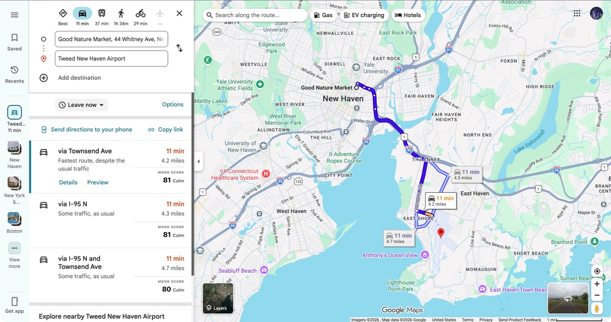
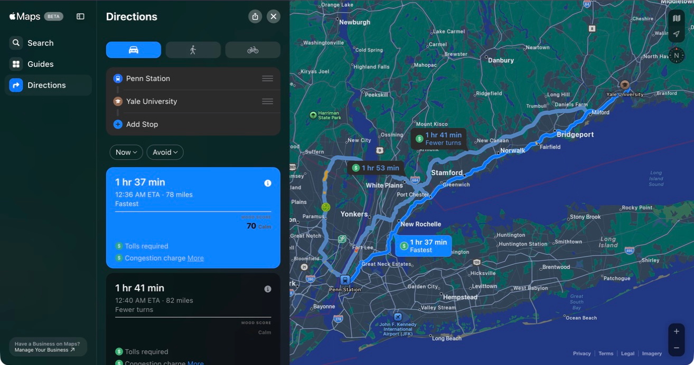
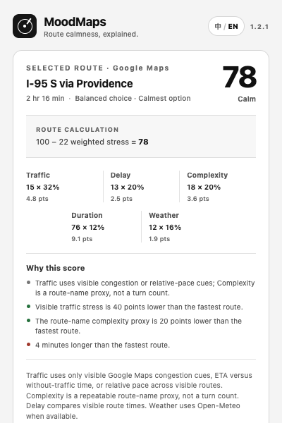
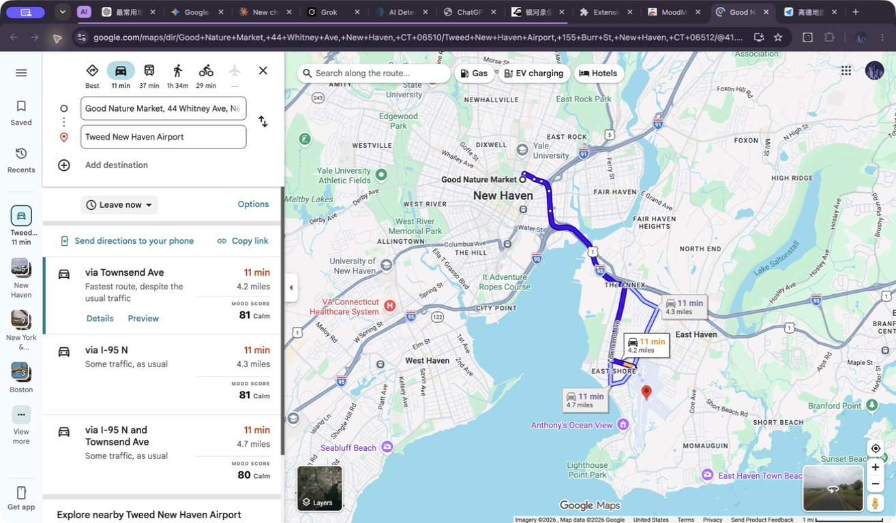
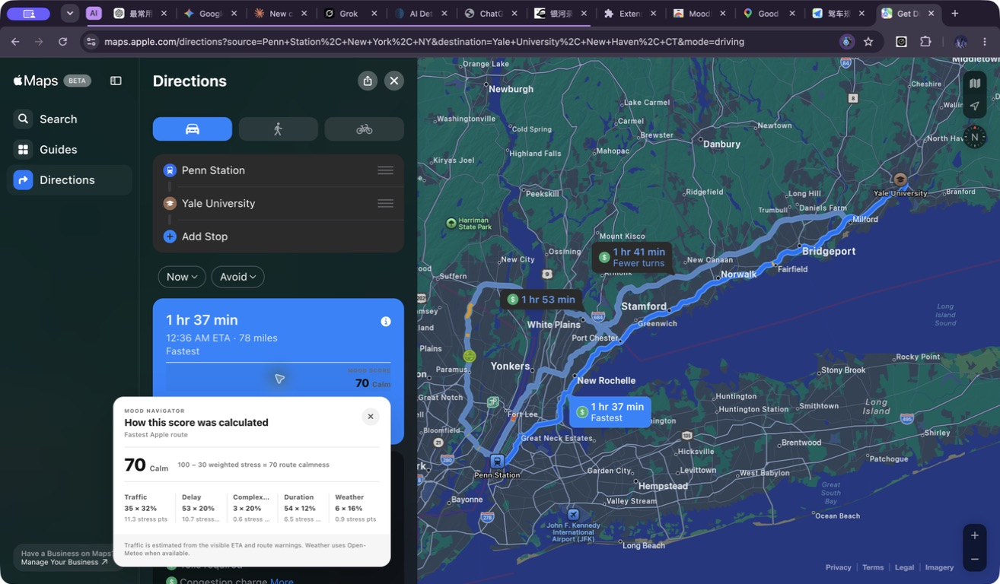

MoodMaps
Choose the route
that feels better.
Compare driving routes by calmness,
not only travel time.
Google MapsApple MapsWazeAmap

Mood Scores, right on your map.
See a clear score on every visible driving route.

CLEAR BY DESIGN
See what shapes
See what shapes
every score.
Visible proxies are labeled clearly;
segments and turn counts are never guessed.
TrafficDelayComplexityDurationWeather

Fastest. Balanced. Calmest.
Understand the trade-off before you start driving.
MORE CONTEXT, LESS GUESSWORK
Current context,
Current context,
without invented detail.
MoodMaps uses visible traffic, pace, route names,
ETA, and weather - then explains every input.
No second route form.
Just plan your drive in a supported map.

MoodMaps
Route calmness, explained.
MoodMaps
A calmer way
to compare routes.
Mood Scores for Google Maps, Apple Maps, Waze, and Amap.
